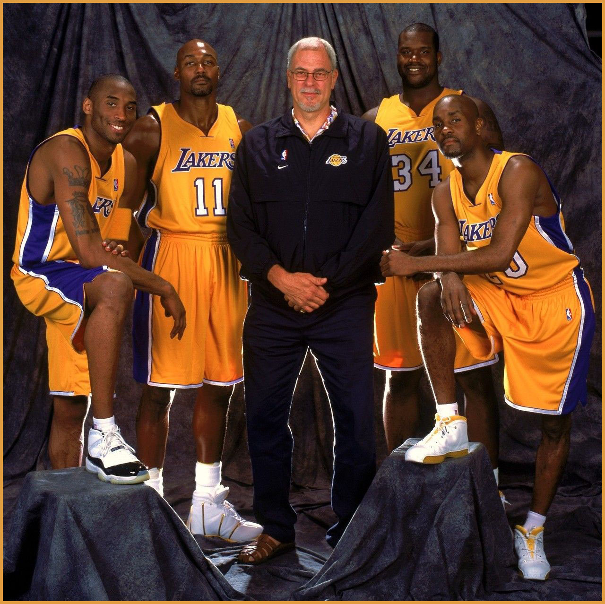

HISTÓRIA DO LOS ANGELES LAKERS
O Los Angeles Lakers é uma das maiores franquias da história da NBA, senão a maior, junto com o Boston Celtics. Pode se considerar também que é um patrimônio histórico do basquete. Bom, essa longa e bela história começou na temporada de 1947-48, quando a vaga da quebrada franquia do Detroit Gems foi comprada por Ben Berger e Morris Chalfen e transferida para Minneapolis, no estado de Minnesota. O interessante é que o recém formado Minneapolis Lakers já começou com um grande time, geralmente o início das franquias são de estruturação e dificuldades para formar um bom elenco.
Esse início com um bom elenco tinha uma base muito sólida, uma das lendas do basquete, o pivô George Mikan e um dos melhores alas da década de 40 e 50: Jim Pollard, o homem que aquecia para os jogos enterrando da linha de lances livres, ancestral de Zach LaVine. Com essa dupla e o bom John Kundla no comando técnico da equipe, não foi muito difícil ganhar o título da NBL (National Basketball League) naquela temporada.
George Mikan
Em 1948, o Lakers se transferiu para a BAA (Basketball Association of America) junto com mais 3 franquias. Com a aquisição no Draft de 1949 de um dos primeiros alas pivôs da história, o atlético Vern Mikkelsen, o time passou pelo Rochester Royals na final da conferência e venceu seu 1º título da BAA/NBA. Mikan foi o cestinha da liga, anotando 28,3 pontos por jogo.
Depois da temporada 1948-49, NBL se fundiu com a BAA, formando a nossa querida NBA. E adivinhem quem foi a primeira dinastia da NBA...Sim, o Lakers! Faturaram seu segundo título na temporada 1949-50, depois de uma campanha incrível, com 51 vitórias e 17 derrotas, Mikan foi novamente o cestinha da liga (28,4 PPG). No ano seguinte, perderam a final de conferência para o Rochester Royals, que ainda se sagrou campeão naquele ano.
A derrota dura na final da conferência oeste para o Royals serviu de aprendizado e deu mais energia ainda para aquele time do Lakers, que com uma fome absurda, venceu 3 títulos consecutivos (1952 á 1954). O título de 1954 foi o mais difícil, o astro George Mikan sofria com problemas no joelho, sua média caiu para 18 PPG, mesmo assim o Minneapolis conseguiu derrotar o Syracuse Nationals na final da liga.
Elgin Baylor
Com a aposentadoria definitiva de George Mikan, o time perdeu força, conseguiu chegar no máximo a final da conferência de 1957, mas o time foi ladeira a baixo e acumulou a sua pior campanha em 1957-58, vencendo apenas 19 jogos. Parece ruim, mas aquela campanha foi fundamental para o time conseguir draftar uma lenda do basquete, Elgin Baylor. O ala estreou na temporada 1958-59 e impressionou a todos com seu talento. Ele foi o quarto maior pontuador da liga (24,9 PPG) e terceiro maior reboteiro (15 RPG), além de anotar a então 3ª maior pontuação da história da liga, com incríveis 55 pontos. Baylor levou o Lakers do último lugar, para a final da NBA, isso tudo no seu primeiro ano como profissional. A final foi um marco, o início da maior rivalidade da história: Lakers x Celtics! O incrível time de Boston acabou sendo o campeão daquele ano.
Jerry West
Apesar da monstruosidade de Elgin Baylor, uma tenebrosa época para ser rival do Celtics tinha começado no seu ano de calouro. O Lakers caiu de rendimento e teve uma péssima campanha em 1959-60, com 25 vitórias e 50 derrotas. Outra temporada ruim que serviu para melhorar o time, mais uma lenda proveniente do Draft, Jerry West, o famoso logotipo da NBA. Contudo, o fator fundamental de 1960 foi a decisão do dono do time, Bob Short, de mudar a franquia para uma cidade maior, um centro econômico. Surgia assim o Los Angeles Lakers.
Na temporada de estreia em L.A. o time melhorou sua campanha anterior em 11 vitórias e voltou aos playoffs. Baylor bateu o recorde da NBA e marcou incríveis 71 pontos e 25 rebotes em um jogo contra o Knicks. O time chegou na final de conferência e acabou sendo derrotado pelo St. Louis Hawks no jogo 7. Na temporada de 1961/62, Baylor teve 38,3 PPG e West teve 30,8 PPG, essa combinação letal levou o Lakers para mais uma final da liga contra o Celtics, depois de uma boa campanha na temporada regular (54-26). A final foi uma das mais sofridas da história da franquia. O Celtics venceu na prorrogação do jogo 7, por apenas 3 pontos de vantagem.
Aquele time do Celtics faturou 11 títulos, era simplesmente sensacional, a maior dinastia da história da NBA, Baylor nasceu na época errada. O último pilar para o Lakers voltar a ser campeão foi Wilt Chamberlain, que foi integrado ao elenco em 1968, após uma excelente troca feita pelo Lakers. Wilt é um dos maiores jogadores da história do basquete e já tinha tido a experiência de vencer um título, era a peça perfeita.
Wilt Chamberlain
Logo na sua primeira temporada em Los Angeles, Chamberlain teve uma média simplesmente ridícula: 21,1 rebotes por jogo! O big three de Los Angeles era sensacional e o Boston já estava em um processo de declínio, foi apenas o 4º colocado do leste. Entretanto, nos playoffs os celtas se transformavam, chegaram na final da NBA. Depois da excelente campanha, o Lakers era favorito e iria decidir o jogo 7 contra o Boston em casa pela primeira vez. Ah o basquete...O favorito Lakers perdeu o título em casa para o arquirrival.
O time de Los Angeles perdeu um total de 7 finais para o Celtics em um período de 10 anos. Todos na vida tem uma chance, 1970 trouxe a última chance de Baylor vencer um título, a final era contra o... Knicks, e o Knicks era freguês do Lakers, Baylor costumava atropelar o time de Nova Iorque, mas a vida é interessante, quando não é para ser, não adianta. Knicks 4x3 Lakers.
O futuro laker, então jogador do Milwaukee Bucks, Kareem Abdul-Jabbar, botou toda a temporada 1970/71 embaixo do braço e venceu tudo o que era possível, inclusive eliminando o Lakers na final da conferência de 1971. Foi a última chance para Baylor, uma das maiores injustiças do basquete foi ele ter se aposentado (em 1971) sem vencer nenhum título.

O time que conseguiu 33 vitórias consecutivas em 1972
Como sempre na história dessa franquia, uma nova era chegou bem rápido. Em 1996, Kobe Bryant foi draftado pelo Hornets e o Lakers conseguiu adquiri-lo em uma troca. O jovem Kobe tinha apenas 17 anos e acabava de sair da escola. Sim, ele foi direto da escola para a NBA! Na mesma janela, outra aquisição de peso (sem piadinhas), Shaquille O'Neal foi contratado! A 3ª peça foi draftada no mesmo ano, Derek Fisher. Os torcedores do Lakers devem ter saudades da administração do time naquela época.
Shaq era o principal jogador da franquia e liderava o time, que fez excelentes campanhas em 1997, 1998 e 1999. Entretanto, aquelas boas temporadas não foram traduzidas em títulos, o pivô precisava de mais apoio em quadra. O já consagrado técnico Phil Jackson foi contratado, com a experiência de 6 títulos com o Chicago Bulls. Kobe melhorava a cada temporada e passou a fazer uma dupla letal com Shaq, com alguns desentendimentos fora de quadra, mas dentro de quadra eram demais.
Lakers "Three Peat"
O time dominou a temporada do início ao fim, depois de 67 vitórias e 15 derrotas, Shaq foi o cestinha e MVP da temporada e da final. Depois de uma virada sensacional contra o Blazers na final do oeste, o Lakers venceu o Pacers de Reggie Miller na final da NBA e voltou a vencer a liga depois de 12 anos! O time de L.A. seguiu avassalador em 2001, varrendo todos os adversários e derrubando o Sixers de Iverson na final por 4x1, Shaq foi o MVP das finais novamente.
Depois de ser apenas o 3º no oeste, o Lakers foi aos playoffs e fez uma final de conferência épica contra o Sacramento Kings, que chegou a liderar a série por 3x1, mas após uma virada sensacional, o Lakers chegou na final da NBA contra o New Jersey Nets e passou o trator, um sonoro 4x0 e o 3º título seguido da franquia, Shaq juntou-se a Michael Jordan, sendo os únicos jogadores a conseguir 3 prêmios de MVP das finais consecutivos.

O muito bom San Antonio Spurs eliminou o Lakers na semifinal do oeste de 2003 e foi o campeão daquela temporada. Em 2004, Karl Malone e Gary Payton foram 2 reforços de peso para o time. O problema foram as lesões, mas o Lakers foi o 2º no oeste e conseguiu chegar na final da liga contra o Pistons. Franco favorito, o Lakers sofreu uma derrota muito inesperada, um 4x1 para o não tão badalado time do Detroit Pistons. Shaq foi para o Miami Heat, Phil Jackson se demitiu, muitos dizem que tudo isso foi devido a conflitos internos. O fato é que mais uma era se acabou.
Mais um período de reconstrução pela frente e uma mudança fundamental: O novo time seria montado em volta de Kobe. O período de reconstrução durou até 2007. Kobe foi convencido a ficar no time na temporada anterior, Phil Jackson voltou ao cargo de técnico. Derek Fisher foi recontratado e Pau Gasol foi contratado em fevereiro de 2008. O time voltou a boa fase e liderou o oeste, Kobe foi o MVP da temporada, mas não conseguiu vencer o poderoso elenco do Boston Celtics na final da liga.
O 16º título contra o Boston Celtics

CHEGOU O FIM DA PÁGINA CLIQUE ACIMA PARA SER REDIRECIONADO